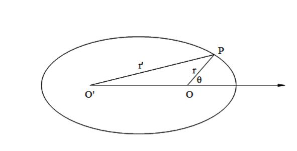
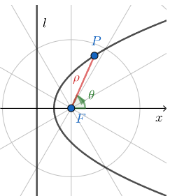
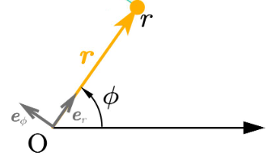
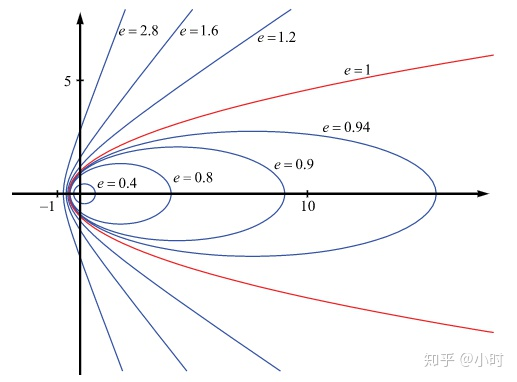

由万有引力定律推导行星轨道形状
作者：王峰 - 知乎
前置知识：导数、圆锥曲线、引力定律、极坐标。
我们先给出圆锥曲线的极坐标方程的统一方程。
先来推导椭圆的极坐标方程。把极点选在椭圆的一个焦点上，让极轴沿着椭圆的长轴指向远离另一焦点的方向，如图

按照定义，椭圆是到两焦点的距离之和等于常数的点的轨迹。设这距离之和为常数 2a，设两焦点间的距离为2c，椭圆的方程应为
在上一方程中，先把左边的第一项 移到右边，再取两边的平方消去根号，我们得到
由此又可得到
这里 , , 为离心率
这样我们就得到了椭圆的极坐标方程
按照同样的方法，读者可自行验证 也是双曲线在极坐标下的表达式，同样有 为离心率。
下面推导抛物线的表达式。把极点选在抛物线的焦点上：

记 ， 到准线 的距离为 ，焦点到准线的距离为 ，由定义知 ，由图形可得 ，代入得 ，整理后得到极坐标方程：
于是我们就证明了圆锥曲线的极坐标方程的统一形式： ， 为离心率。当 时，轨迹为圆； 时，轨迹为椭圆； 时，轨迹为抛物线； 时，轨迹为双曲线。
下面推导行星（视为质点）在引力下的运动轨迹。
采用极坐标，设极径方向上的单位矢量为 ，又设为垂直于前者并指向角度 增大方向的单位矢量（如图所示）

分解引力：
其中， （万有引力定律）， .
这里 M 是太阳的质量， m 是行星的质量，G 是万有引力常数。
极坐标下，牛顿第三定律的表示形式与直角系中的不同，因为坐标系方向也在不断改变。实际上，有
这里 . 后一方程两边乘以 得 ，反向应用求导公式 ，得到
这意味着 在仅受向心力（这里是引力）时是一个常量，我们将其命名为角动量，记作 .
角动量守恒，意味着面积速度等于常数 ，即开普勒第二定律实际上是角动量守恒的结果。
再来考察方程 （1）
记 ，则从 ，可得
根据复合函数求导法则 ，有
方程（1）化成 ，即
这是一个二阶常系数线性微分方程，我们等到大学再系统学习。这里，读者可以自行验证它的一般解为
其中 B、C 为常数，上式用辅助角公式可写成
其中 ， ，
于是有
这里 ，
我们得到了圆锥曲线的一般方程 ，说明行星轨迹为一种圆锥曲线。考虑到一般行星不会跑到无穷远去，它的轨道应该是一个椭圆。实际上，通过计算 可以得到圆锥曲线的离心率，假如角动量 足够大，即行星线速度足够大（角动量与线速度成正相关），那么它依然有可能以抛物线或双曲线轨迹运动至无穷远处。（如流浪地球，以及旅行者号等人造天体）
